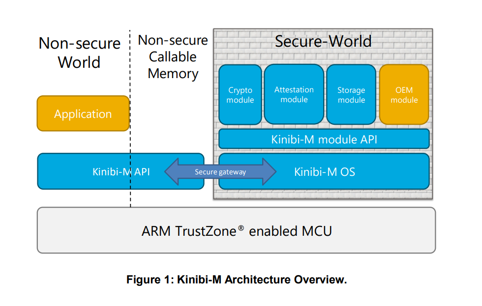
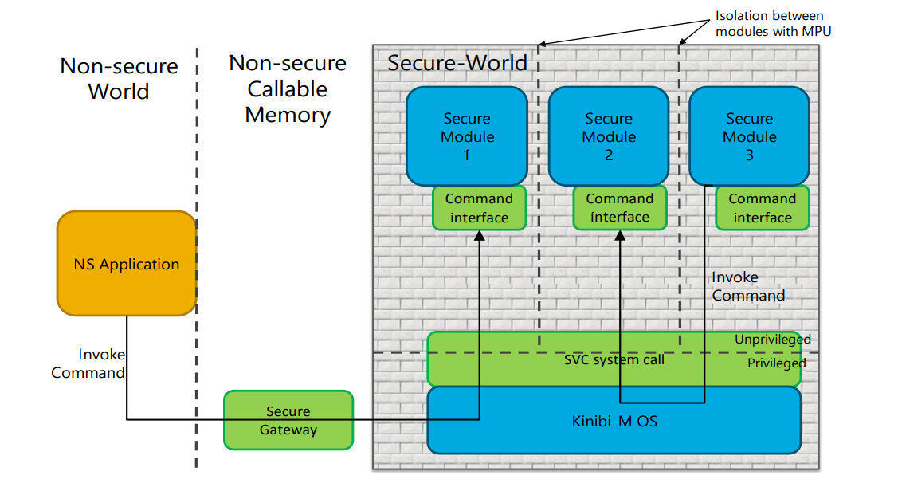
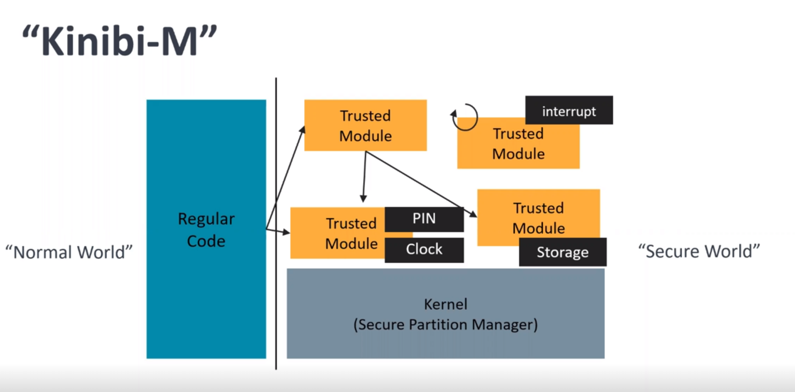
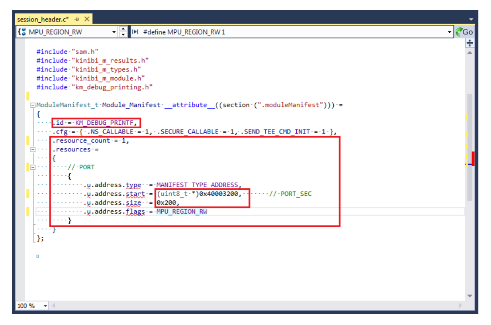
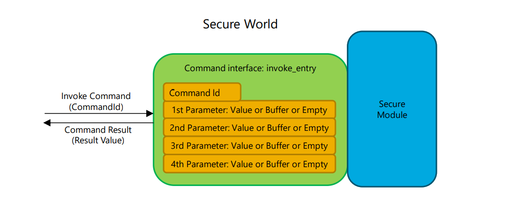
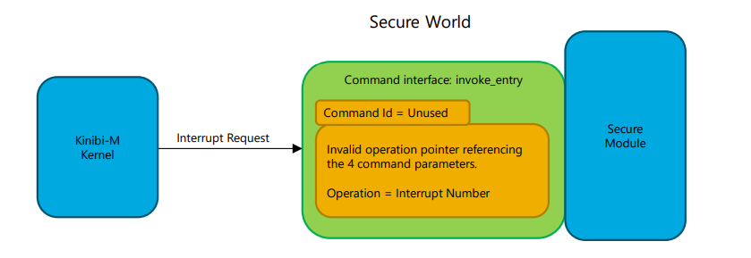
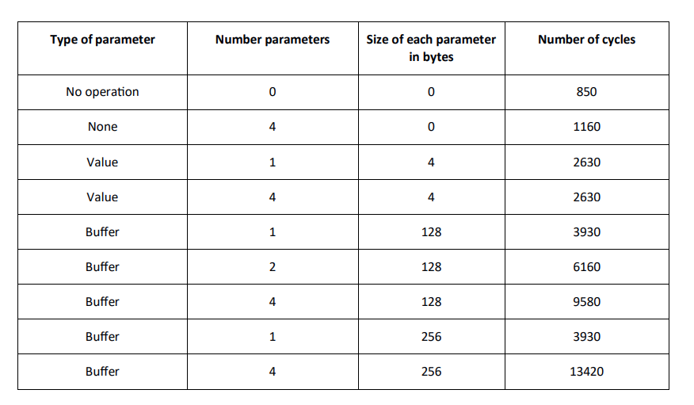
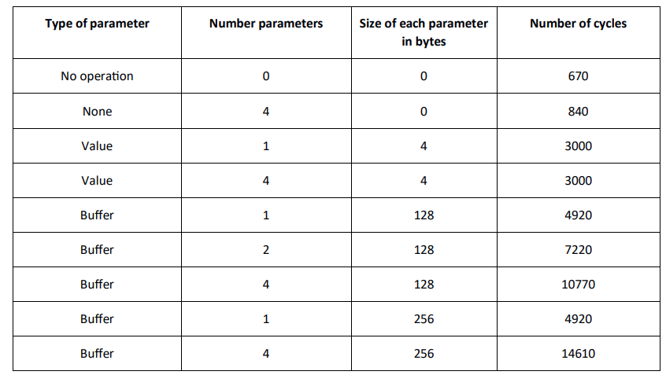
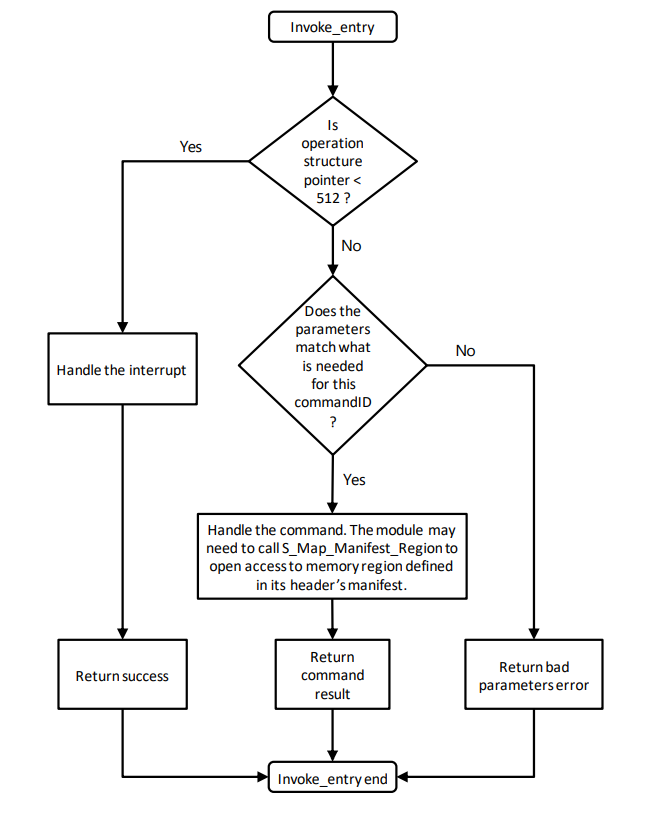
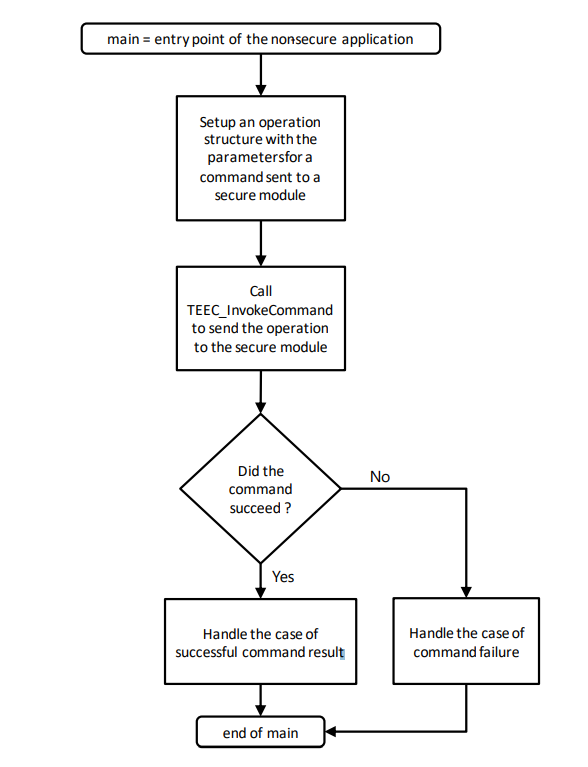

Overview
Kinibi-M 是一个可移植的可信执行环境（Trusted Execution Environment），用于在设备上执行可信的应用程序。它包括内建的密码算法和安全数据存储。它可以被集成到支持ARM TrustZone-M的不同微处理器上。

Kinibi-M 利用TrustZone-M 以及 secure gateway 来与传统的 non-secure 应用进行隔离
Secure-World 包括 Kinibi-M Bootloader 以及带有多个安全模块的 Kinibi-M 操作系统，可以为 Non-Secure World 中的应用程序提供安全的功能。Non-Secure World 包括主要的应用程序以及调用安全模块的接口。
Kinibi-M 含有一个设备唯一的密钥，它是设备出厂时由制造商安装的。它可以为Kinibi-M系统提供消息证明的功能。证明的消息可以被 Trustonic 的云服务商认证， 说明该消息来自一个已知的设备。
Kinibi-M API 主要利用 ARM TrustZone-M 中的 NSC(non-secure callable memory) 实现。Kinibi-M 在NSC中使用了一个 single entry 来保证 Secure 和 Non-secure 之间的隔离。API 相当于一个 Secure World 与 Non-secure World 之间的交互通道，为 non-secure 中的应用程序提供了接口，应用程序给 API 发送命令， API负责将命令交给 Secure World 中的安全模块。
在 Secure World 中，Kinibi-M 提供了安全模块 API 接口，用于开发安全模块。 一个安全模块一般在安全 flash 中运行， 并且只能访问它所在头文件中定义的安全的资源。 安全模块的初始化过程是在 Kinibi-M 系统的 boot 阶段，一旦启动后就可以处理 Non-secure World 应用程序的命令请求。
Global Architecture Overview

当一个 Non-secure World 应用程序传入命令参数并调用 Kinibi-M 的安全模块时，首先进入位于NSC内存中的 Secure Gateway ，然后进入 Secure World 中的 Kinibi-M 内核，内核根据命令参数选择安全模块。由于每个安全模块都是运行在低权限模式下，内核将权限从高权限降到低权限，并将命令参数传给响应的模块进行处理。处理结束后，安全模块通过系统调用回到 Kinibi-M 内核并由内核切换到 Non-secure World 的应用程序。
当有一个安全模块发送命令给另外一个安全模块时，先是通过系统调用交给 Kinibi-M 内核。内核识别发送命令的安全模块并将命令参数交给需要接受的安全模块。
Kinibi-M 通过配置内存保护单元(MPU)对不同的安全模块进行隔离。每个安全模块可以访问它自己的代码和它的栈，但是不能读取其他安全模块的代码与栈。如果安全模块之间需要访问外设，该模块必须向内核声明该外设的地址来获得指定外设的访问权限。
Secure Module Manifest Overview
Kinibi-M 安全模块需要包括一个C的头文件，该头文件定义安全模块的ID以及一个清单。清单包含所属安全模块需要访问的资源。资源可以是：
- 一段内存区域
- 中断号

当 Kinibi-M 将所有的安全模块启动之后，不同的模块不能访问同一个资源除非该资源被标记为 shared。Kinibi-M 保留一些系统内存资源以防安全模块对其访问来保证其安全性，比如 secure bootloader 内存区域。
下图展示了一个安全模块的头文件样例，在该文件中，安全模块声明了一个安全的PORT外设(地址区间为0x40003200-0x40003400)。

Secure Module Command Overview
安全模块的 Command Interface 由一个 invoke_entry 的回调函数构成。命令参数包括Command ID 以及操作结构体。Command ID 是安全模块定义的一个32 bit 的值。操作结构体包含至多四个参数，如下图所示：

每个参数可以是value类型或者buffer类型，也可以不使用：
value：包含两个32 bit 的值
buffer：包含一个指针和一个大小
每个安全模块可以任意选择它所需要的参数的类型。参数可以是输入类型，输出类型或者输入输出类型。对于一个输入的buffer类型参数，安全模块只能读取，但是无法修改它。而输出类型的buffer类型参数可以被安全模块修改，包括内容和大小。输入输出类型的参数可以被安全模块读写。
安全模块可以接受命令输入参数并返回命令输出参数。它必须返回 32 bit 的值来表示命令调用结果(调用成功，未实现，调用失败)
在转发命令参数的过程中，Kinibi-M内核先检查操作结构体中的参数，以确保其安全性。比如，Kinibi-M 检查发送方的命令参数是否访问的是该模块所允许访问的资源，如果这个命令是从 Non-secure World 发起，Kinibi-M 需要保证其参数中没有对 Secure World 内存的引用。
Kinibi-M 通过配置 MPU 来为被调用的安全模块开启对 buffer 参数的访问权限。因为 MPU 已经被用来隔离代码和栈，所以当MPU的区域数达到上限时，Kinibi-M 必须将参数拷贝到栈中。以下框图显示了一个安全模块用MPU来处理命令参数。

在上图中，左边展示的是最好的情况，即所有的命令参数都能被 MPU 所保护起来。在右边第二种情况下，Kinibi-M 已经用了 MPU 中的四个区域，所以需要拷贝第二个 buffer 参数到安全模块的栈中。
另外，除了安全模块的代码和栈所用到的 MPU 的区域块，其他的区域块可能会被 Kinibi-M 模块用来允许安全模块访问其头文件中定义的内存资源。
当 Kinibi-M 必须要拷贝操作结构体到安全模块的栈中时，依旧能保证安全和隔离性，但是会影响性能。拷贝的时间取决于 buffer 参数的大小。SAML11 有四个 MPU 区域块，两个被安全模块的代码和栈所使用，剩下两个用来传递参数。需要注意的是，一旦安全模块声明需要访问内存资源，一个区域块就会被用来作为指定内存资源的访问控制，所以只留下一个区域块用来传递参数的引用。当区域块不够时，后面的参数会被拷贝。
Interrupt Handling Overview
当一个 Kinibi-M 的安全模块想要处理中断时，它必须在自己的资源清单中声明所要处理的中断号。一旦被声明， Kinibi-M 会将该中断分配给 Secure World，该中断就不能被 non-secure world 所访问。
当安全模块在清单里声明中断号之后，一旦一个中断发生，Kinibi-M 会请求安全模块的命令处理模块。命令处理模块能够通过命令参数分辨出该请求是中断处理请求还是普通调用请求。在中断请求的命令参数中，操作值不再是四个参数的指针，而是等于中断号。因此，安全模块可以根据中断号来处理不同的中断。

当安全模块处理中断请求时，它的权限和处理普通调用请求一样。
因为要配置 MPU 来保证安全模块的隔离性，Kinibi-M 内核在收到 MCU 的中断请求后请求安全模块的命令处理的过程中会引入额外的开销。在处理中断之前设置安全保护措施的时间大概需要400个时钟周期。
Invoke Command Benchmark
在一个 Non-secure 的应用调用一个安全模块的过程中或者安全模块调用安全模块的过程中，由于命令的调用需要进行上下文的切换，所以会产生一定的开销。
Non-secure Application Calling Invoke command

Secure Module Calling Invoke command

Invoke Command Handle Process

Basic Non-secure Application Implementation
